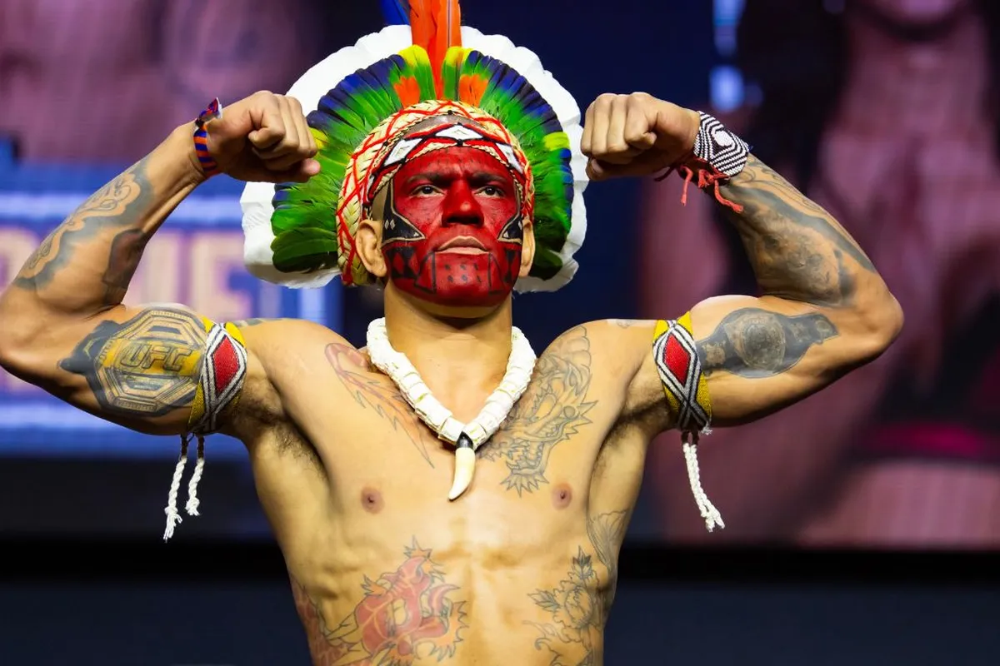
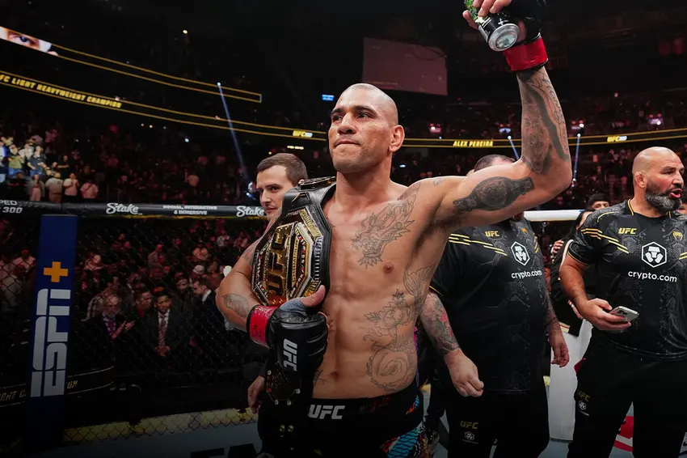

Lutador de artes marciais mistas e ex-kickboxer

Alex Sandro Silva Pereira, também conhecido como Alex Poatan (São Bernardo do Campo, 7 de julho de 1987), é um lutador brasileiro de artes marciais mistas e ex-kickboxer. Ele atualmente compete na divisão dos pesados do Ultimate Fighting Championship (UFC), onde é ex bi-Campeão Peso Meio-Pesado do UFC e ex-Campeão Peso Médio do UFC.
Crescendo em uma favela em São Bernardo do Campo , Pereira largou o ensino fundamental para começar a trabalhar como auxiliar de pedreiro[13] e, mais tarde, em uma borracharia.[14] Influenciado por seus colegas, ele começou a beber e, eventualmente, se tornou um alcoólatra.[14] Em 2009, ele começou a treinar kickboxing para se livrar de seu vício.[15]
Alex “Poatan” Pereira, campeão do UFC, orgulha-se de suas raízes indígenas: com avós do povo Pataxó, ele mantém vínculo com a Aldeia Siratã Mantxó, em Coroa Vermelha, Bahia, visitando a comunidade e celebrando sua cultura ancestral.
"Agora eu fui na aldeia e você vê a simplicidade dessas pessoas e a alegria dessas pesosas, é pra gente aprender. Muita gente com muita grana não tem a felicidade que esse povo tem, eu prefiro aprender com esse povo pra nunca esquecer disso."
Alex Poatan
"A vingança nunca é plena, mata a alma e envenena. Não é vingança, não é vingança! Eu estava preparado neste momento! Eu falei para todo mundo e ninguém acreditou. Não estava em condições (na primeira luta), agora eu estou!"
declarou Poatan, que reconquistou o cinturão meio-pesado (93 kg) do UFC apos derrotar Magomed Ankalaev

Alex Poatan com cinturao do UFC
Voce pode conhecer mais sobre o lutador clicando aqui